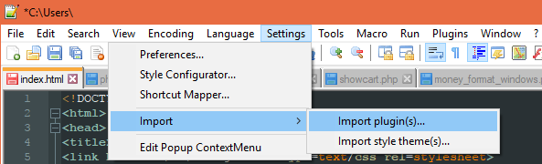

COSC 304 - Introduction to Database Systems
Assignment 7 - Local Setup
The fastest way to do this assignment is to edit the files locally on your computer with any text editor, upload them to the server, and test them by connecting to the web page URL. An alternate way is to setup a PHP web server on your machine for testing (instructions).
Steps
- Install a text editor. You can use Eclipse which has support for PHP or a text editor like Notepad++.
- Edit the files (such as listorder.php) in the text editor and save them on your computer.
- Install a SecureFTP program to transfer the files to the cosc304.ok.ubc.ca server. Choices include FileZilla or the the NppFTP plugin for Notepad++.
- Create the directory
lab7 in the public_html folder on cosc304.ok.ubc.ca. All the PHP files should be transferred into that directory.
File Transfer using Notepad++ and NppFTP plugin
- Open Notepad++ as administrator, navigate to Settings > Import > Import plugin(s).

- Locate plugin, and click Open.
- Connect Notepad++ to cosc304.ok.ubc.ca
- In Notepad++, select Plugins > NppFTP > Show NppFTP Window (Note, it may not work directly after importing; you may need to re-open Notepad++ after installation)
- Select the Gear image, and choose Profile Settings. Create a new profile, SFTP, cosc304.ok.ubc.ca, and your UBC Novel login details.

 Home
Home